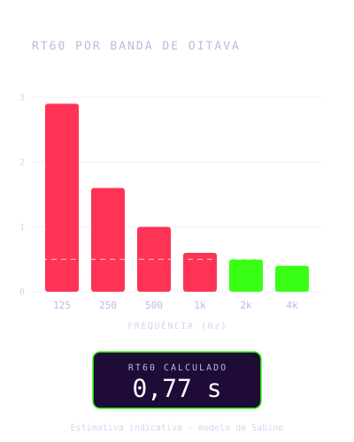
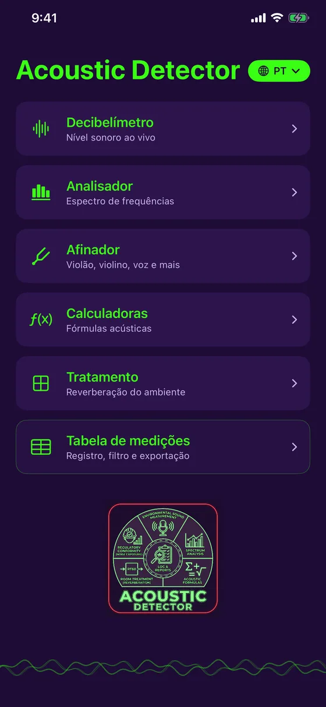
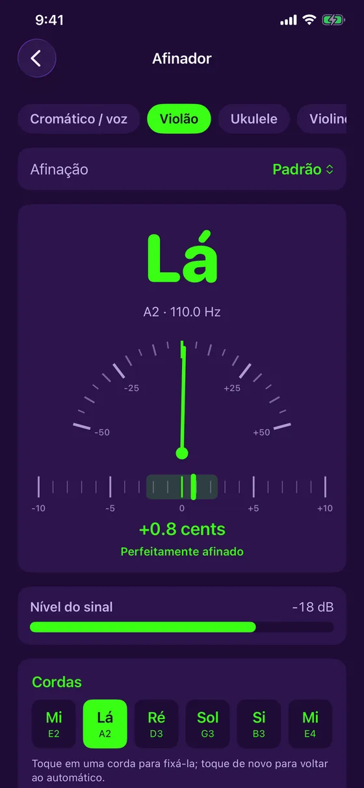
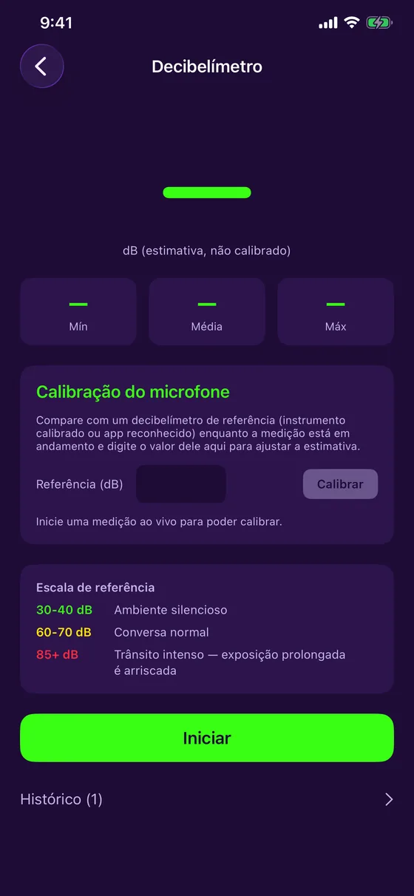
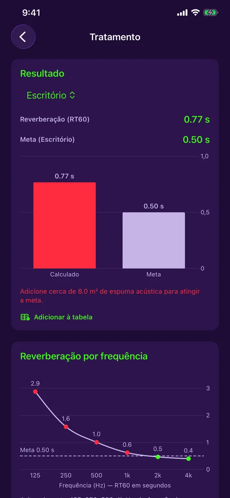
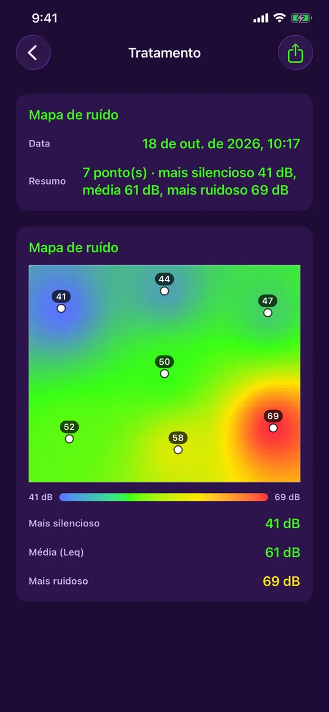
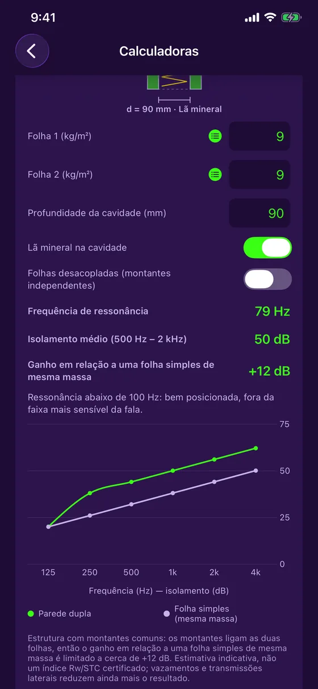
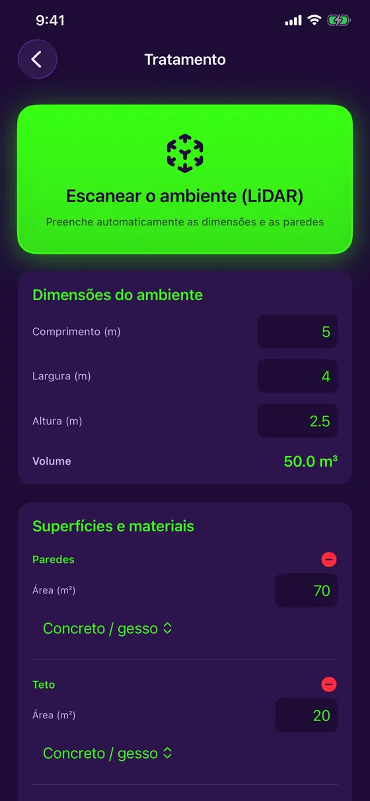
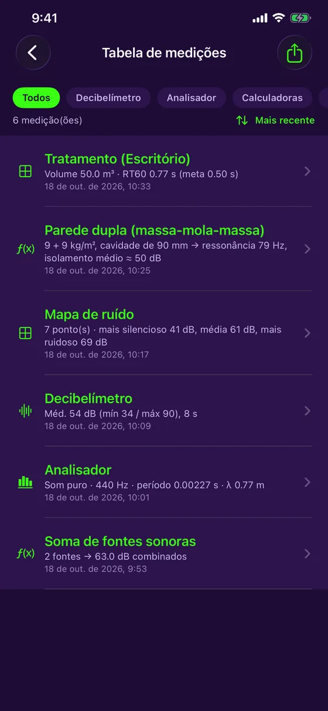

Medição sonora e tratamento acústico
Ouça. Analise. Corrija.
O Acoustic Detector transforma seu iPhone em uma ferramenta de acústica. Meça o ruído, analise o espectro, escaneie um ambiente com LiDAR e descubra onde ele ressoa e quanta espuma acústica adicionar. Grátis, 100 % offline, em 7 idiomas.

Versão 1.4.1: um afinador gratuito, mais estável e preciso
O Acoustic Detector traz um afinador gratuito para violão, ukulele, violino e mais, e agora fala português, francês, inglês, espanhol, alemão, italiano e japonês.
- Afinador gratuito: violão/guitarra (5 afinações), ukulele (com sol grave e barítono), violino, viola, violoncelo, bandolim, banjo e modo cromático para a voz
- Versão 1.4.1: leitura mais estável que ignora medições erráticas, agulha mais precisa, indicador de nível do sinal
- Notas em Dó Ré Mi ou em C D E conforme o idioma, e uma vibração quando está afinado
- 7 idiomas, à escolha no menu principal
- RT60 por banda de oitava, de 125 Hz a 4 kHz, em relação à sua meta
- Mapa de ruído: meça em vários pontos e obtenha um mapa de calor
- Parede dupla: frequência de ressonância e isolamento por frequência
- O app é gratuito: decibelímetro, analisador, afinador, tabela de medições e exportação em PDF incluídos; Tratamento e Calculadoras com uma compra única
Versão 1.4.1 disponível na App Store.
Uma ferramenta indicativa, apresentada com honestidade. O microfone do iPhone não é um instrumento certificado: os valores exibidos são estimativas, claramente identificadas como tais, com calibração manual opcional para refinar a precisão. O Acoustic Detector não substitui um instrumento calibrado para conformidade regulatória oficial.
O que o Acoustic Detector faz
Um único aparelho para medir e corrigir
Decibelímetro ao vivo
Nível em dB em tempo real, com mínimo, média e máximo, calibração do microfone e histórico em cores.
Analisador de espectro
Análise de frequências ao vivo, com detecção de tom puro: frequência, período e comprimento de onda.
Tratamento de um ambiente
O tempo de reverberação (RT60) em relação à meta do seu uso, e a quantidade de espuma acústica a adicionar.
Escaneamento LiDAR
No iPhone Pro, varra o ambiente: as dimensões e a área de cada parede são preenchidas sozinhas.
Mapa de ruído
Meça o nível em vários pontos e veja as zonas calmas e barulhentas em um mapa de calor.
Afinador
Violão, ukulele, violino, viola, violoncelo, bandolim, banjo, ou qualquer nota e sua voz: agulha e cents ao vivo.
Calculadoras
Soma de fontes sonoras, pressão sonora, frequência e comprimento de onda, e cálculo de parede dupla.
Prévia
Sóbrio, preciso, pronto para o campo








Para quem
Da obra ao estúdio
Empreiteiros e técnicos
Meça o ruído de um local, verifique uma divisória, estime o tratamento de um ambiente antes de orçar.
Estúdios, músicos, áudio
Calcule a reverberação de uma sala, encontre os graves problemáticos, estime a espuma a adicionar e afine seus instrumentos.
Casa e escritório
Home theater, home office, sala de reuniões: descubra onde ressoa e o que fazer a respeito.
Preço
Grátis, com uma compra única opcional
Grátis
- Decibelímetro ao vivo e calibração
- Analisador de espectro
- Afinador (violão, violino, voz e mais)
- Tabela de medições
- Exportação em PDF com gráficos
Completo
- Tudo do gratuito
- Tratamento: RT60, absorção, escaneamento LiDAR, mapa de ruído
- Calculadoras: fontes, pressão, ondas, parede dupla
- Sem assinatura
O preço é exibido pela App Store conforme o seu país. Se você comprou o app antes de ele se tornar gratuito, tudo continua desbloqueado automaticamente.
Pronto para ouvir o seu ambiente?
O Acoustic Detector está disponível na App Store, para iPhone. Grátis, com uma compra única opcional.
Baixar na App Store